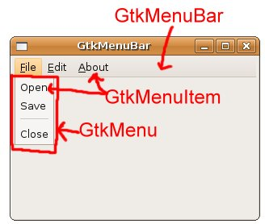
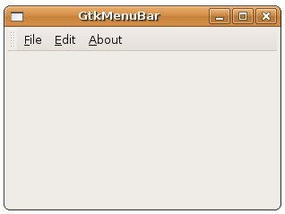
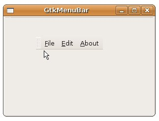

GtkMenuBar、GtkMenu、GtkMenuItem是用來製作視窗程式的選單功能，以下是三個元件的作用示意圖：

圖中的File、Edit、About、Open、Save、分隔線、Close等項目，都是GtkMenuItem的實例，在File底下有子選單，這是GtkMenu的實例，視窗上方則為GtkMenuBar的實例。
上圖中，File、Edit、About附加至GtkMenuBar中：
GtkMenuBar *menubar = gtk_menu_bar_new();
// 將File、Edit、About附加至GtkMenuBar中
gtk_menu_bar_append(menubar, createFileMenuItem());
gtk_menu_bar_append(menubar, gtk_menu_item_new_with_mnemonic("_Edit"));
gtk_menu_bar_append(menubar, gtk_menu_item_new_with_mnemonic("_About"));
Open、Save、分隔線、Close加入至GtkMenu，並設定為File這個GtkMenuItem的子選單：
GtkWidget *rootFileItem;
GtkWidget *fileMenu;
GtkWidget *openMenuItem;
GtkWidget *saveMenuItem;
GtkWidget *closeMenuItem;
rootFileItem = gtk_menu_item_new_with_mnemonic("_File");
fileMenu = gtk_menu_new();
openMenuItem = gtk_menu_item_new_with_label("Open");
saveMenuItem = gtk_menu_item_new_with_label("Save");
closeMenuItem = gtk_menu_item_new_with_label("Close");
// 將Open、Save、分隔線、Close這些GtkMenuItem加入GtkMenu中
gtk_menu_shell_append(GTK_MENU_SHELL(fileMenu), openMenuItem);
gtk_menu_shell_append(GTK_MENU_SHELL(fileMenu), saveMenuItem);
gtk_menu_shell_append(GTK_MENU_SHELL(fileMenu), gtk_separator_menu_item_new());
gtk_menu_shell_append(GTK_MENU_SHELL(fileMenu), closeMenuItem);
// 設定為File這個GtkMenuItem的子選單
gtk_menu_item_set_submenu(GTK_MENU_ITEM(rootFileItem), fileMenu);
當GtkMenuItem被選中時，會發出activate的Signal，您可以用以連結進行相對應處理的callback函式。
下面的範例是個簡單的示範，程式中若按下Open、Save，會在文字模式下顯示對應的文字，按下Close則會關閉視窗，執行的結果就是上面的圖所表示的：
#include <gtk/gtk.h>
void itemPressed(GtkMenuItem *menuItem, gpointer data) {
g_print("%s\n", data);
}
GtkWidget* createFileMenuItem() {
GtkWidget *rootFileItem;
GtkWidget *fileMenu;
GtkWidget *openMenuItem;
GtkWidget *saveMenuItem;
GtkWidget *closeMenuItem;
rootFileItem = gtk_menu_item_new_with_mnemonic("_File");
fileMenu = gtk_menu_new();
openMenuItem = gtk_menu_item_new_with_label("Open");
saveMenuItem = gtk_menu_item_new_with_label("Save");
closeMenuItem = gtk_menu_item_new_with_label("Close");
gtk_menu_shell_append(GTK_MENU_SHELL(fileMenu), openMenuItem);
gtk_menu_shell_append(GTK_MENU_SHELL(fileMenu), saveMenuItem);
gtk_menu_shell_append(GTK_MENU_SHELL(fileMenu),
gtk_separator_menu_item_new());
gtk_menu_shell_append(GTK_MENU_SHELL(fileMenu), closeMenuItem);
gtk_menu_item_set_submenu(GTK_MENU_ITEM(rootFileItem), fileMenu);
g_signal_connect(GTK_OBJECT(openMenuItem), "activate",
G_CALLBACK(itemPressed), "Open ....");
g_signal_connect(GTK_OBJECT(saveMenuItem), "activate",
G_CALLBACK(itemPressed), "Save ....");
g_signal_connect(GTK_OBJECT(closeMenuItem), "activate",
G_CALLBACK(gtk_main_quit), NULL);
return rootFileItem;
}
int main(int argc, char *argv[]) {
GtkWidget *window;
GtkWidget *vbox;
GtkWidget *menubar;
gtk_init(&argc, &argv);
window = gtk_window_new(GTK_WINDOW_TOPLEVEL);
gtk_window_set_title(GTK_WINDOW(window), "GtkMenuBar");
gtk_window_set_default_size(GTK_WINDOW(window), 300, 200);
menubar = gtk_menu_bar_new();
gtk_menu_bar_append(menubar, createFileMenuItem());
gtk_menu_bar_append(menubar, gtk_menu_item_new_with_mnemonic("_Edit"));
gtk_menu_bar_append(menubar, gtk_menu_item_new_with_mnemonic("_About"));
vbox = gtk_vbox_new(FALSE, 5);
gtk_box_pack_start(GTK_BOX(vbox), menubar, FALSE, FALSE, 2);
gtk_container_add(GTK_CONTAINER(window), vbox);
g_signal_connect(GTK_OBJECT(window), "destroy",
G_CALLBACK(gtk_main_quit), NULL);
gtk_widget_show_all(window);
gtk_main();
return 0;
}
您可以將GtkMenuBar置入 GtkHandleBox 中，這會讓GtkMenuBar成為一個可拿下來（tear off）的浮動選單列，例如：
....
handleBox = gtk_handle_box_new();
gtk_container_add(GTK_CONTAINER(handleBox), menubar);
vbox = gtk_vbox_new(FALSE, 5);
gtk_box_pack_start(GTK_BOX(vbox), handleBox, FALSE, FALSE, 2);
gtk_container_add(GTK_CONTAINER(window), vbox);
....
一個執行時的結果如下所示：

把選單拿下來成為浮動的畫面如下所示：

|
|